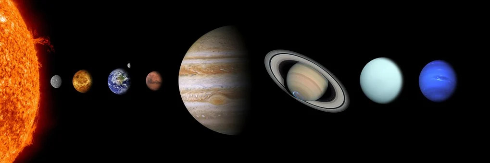

The Solar System
Presented by Matteo Bombelli
The solar system is an amazing area of space we call home, but how much do you really know about it? On this website you can explore the most common features of our solar system and learn about our closest celestial neighbours with the click of a button. You can learn about the inner and outer planets, our wonderful star we call the sun, and other various celestial bodies. Trivia is also included, so you can learn some interesting facts about the solar system. This website includes information on the sun, the 8 planets grouped to inner and outer planets, the asteroid belt, the kyper belt, comets, and trivia about them all! Enjoy the information on this site and I hope you learn something!
